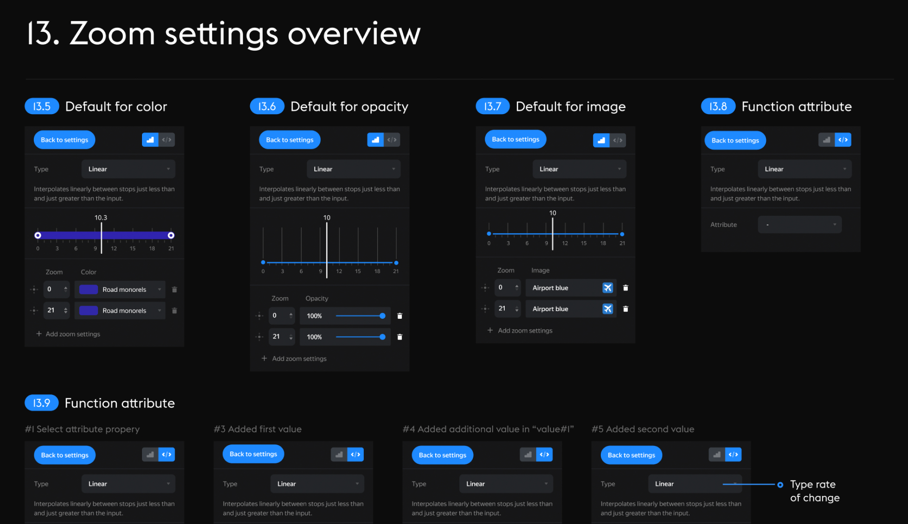
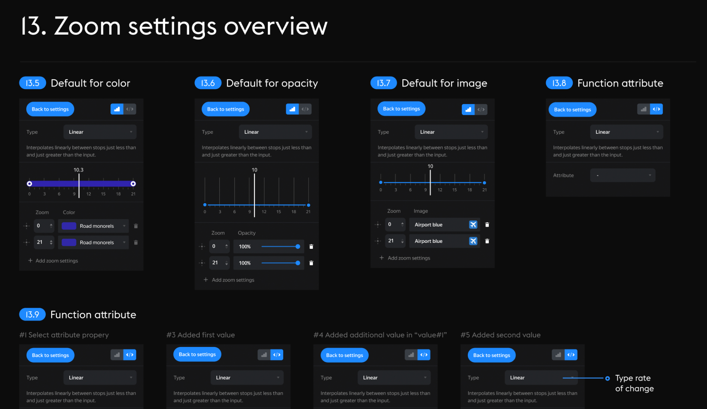

March, 2018
How we create tools at the Yandex Maps. Cartograph
We all use Figma or Sketch for the interface, but have you ever wondered what kind of tool you need to create maps? Creating maps is a complicated process that requires special tools. I would like to share principles and tips for designing complex tools, as we do in Yandex Maps.

What I learned from this project
— Keep mockups and descriptions together. It is a mistake to keep the layout and description in different places. Anyone with access to your mockups needs to figure out how your interface works.

— Coordinate guidelines with development. It is important that design and development speak the same language. Use a common naming for text styles and colors.
— Use numbers for sections in the description. It will be easy for you to refer to sections. A clear structure will help keep everything in its place and avoid chaos.
 

— Don't forget about shortcuts and hints. It is an important part of the product that helps users to work faster.

— Use prototypes for showing all your interface states.
— Use the semantic palette. This will greatly simplify the work for you and the developers, especially if you provide support for multiple themes for your interface.

— Draw all states. It is very important that the design contains real data, with all possible variations. Don't use Lorem texts.


— Too many animations can slow down the interface. Use them very carefully.
— Enjoy working with empty states, 404s and other errors.

And now we have a new tool.